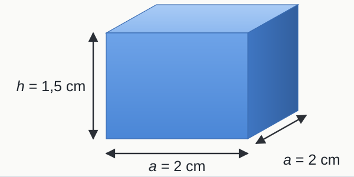
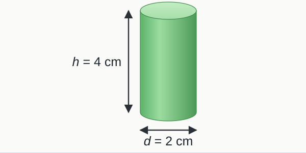
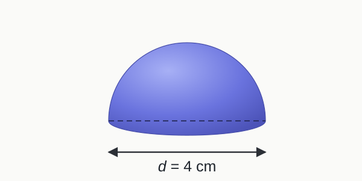
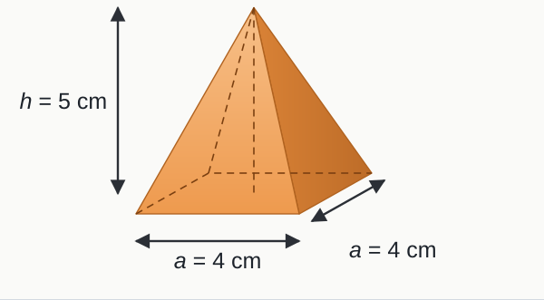
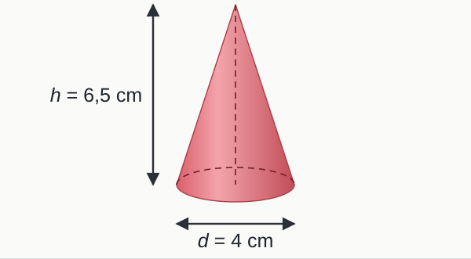
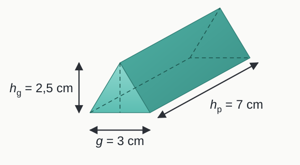
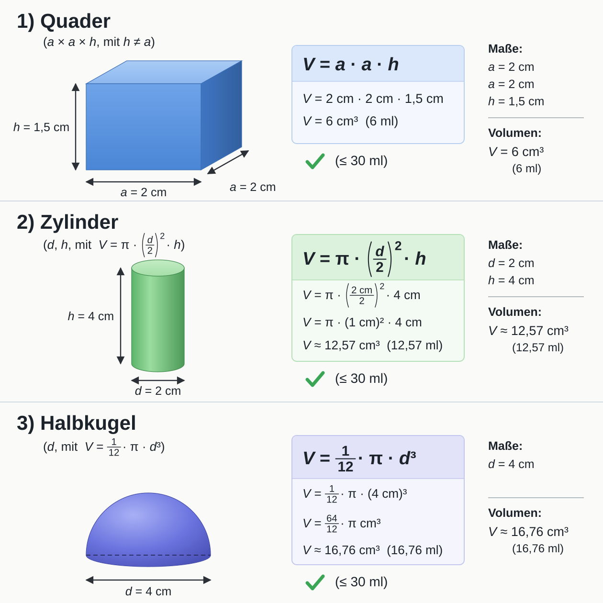
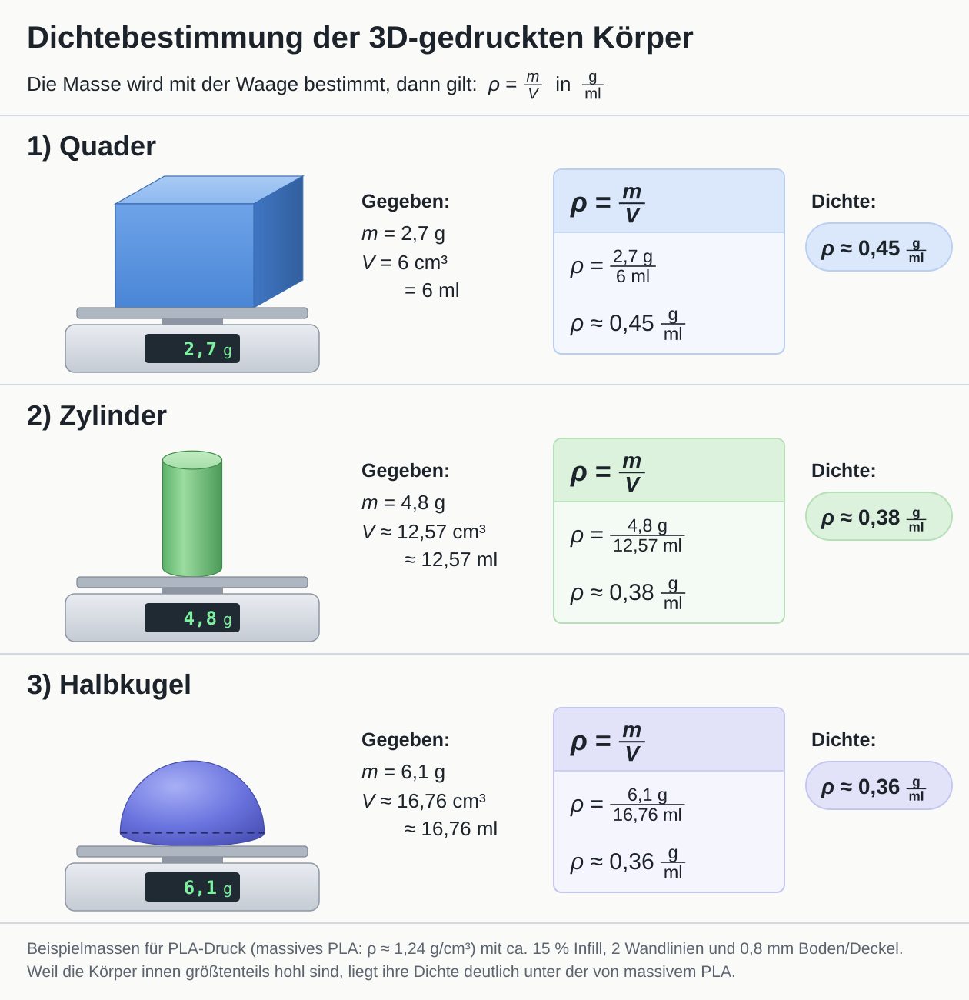
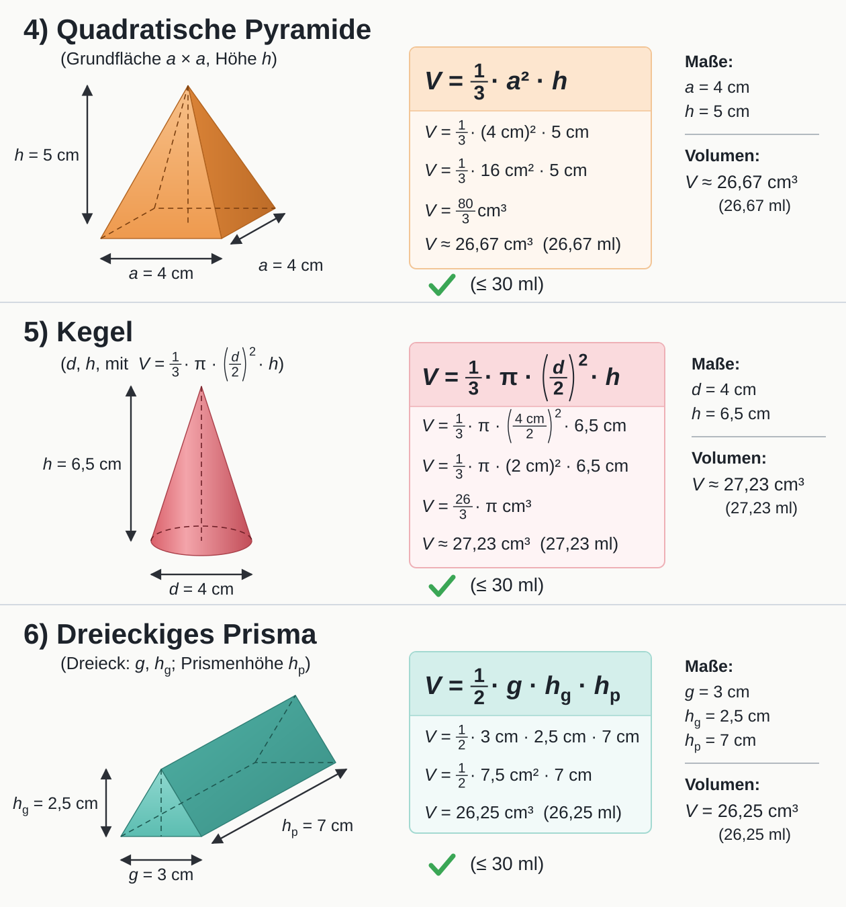
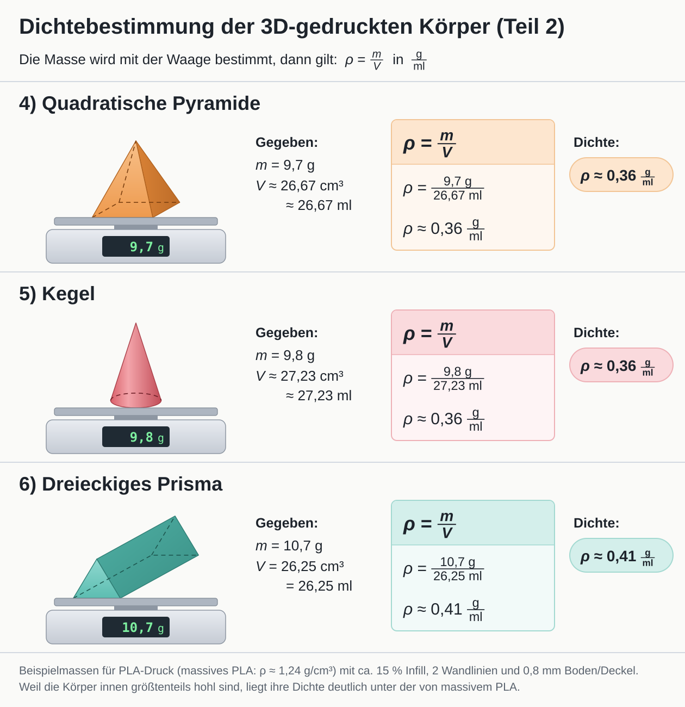

Das lernst du: Du bestimmst die Dichte von 3D-gedruckten Festkörpern: Volumen mit der passenden Formel berechnen, Masse wiegen und die Dichte mit ρ = m / V ausrechnen.
Üben & VertiefenDichte
Einstieg: Plickers-Aufgaben
Mit diesen Aufgaben seid ihr in die Stunde gestartet. Sie wiederholen die Übersicht zu naturwissenschaftlichen Größen. Wer gefehlt hat oder noch einmal üben möchte, kann sie hier nachholen.
0 / 6 richtig
1.Ordne korrekt zu: Welche Begriffe gehören zu den Spalten (1) bis (5)?
Richtig, Größe, Symbol der Größe, Einheiten, Symbol der Einheit, mögliche Messinstrumente.
2.Nenne das Symbol der Größe.
Richtig, das Symbol der Größe Masse ist m.
3.Nenne das Symbol der Einheit.
Richtig, bpm steht für „beats per minute“, also Herzschläge pro Minute.
4.Nenne die physikalische Größe.
Richtig, mit dem Thermometer misst man die Temperatur.
5.Beschreibe eine mögliche Bestimmungsmöglichkeit (Messinstrument).
Richtig, zum Beispiel am Messbecher oder Messzylinder.
6.Wähle einen geeigneten Weg aus, um die Dichte von Festkörpern experimentell zu bestimmen.
Richtig, ρ = m / V: Masse durch Volumen.
✔ Stark, alle Plickers-Aufgaben nachgeholt!
Aufgaben
Forschungsfrage: Wie lässt sich die Dichte von Festkörpern bestimmen? Stelle eine Hypothese auf und ergänze die Formel ρ = m / V (in g/ml).
Durchführung: Die Festkörper werden in Tinkercad modelliert (Volumen höchstens 30 ml), anschließend im 3D-Drucker gedruckt und gewogen.
Beobachtung: Berechne für jeden Körper zuerst das Volumen und dann die Dichte. Die aufklappbaren Hilfen unten führen dich Schritt für Schritt.
Auswertung: Konnte die Hypothese bestätigt werden? Begründe.
Dichtebestimmungen Schritt für Schritt
Die Körper wurden in Tinkercad modelliert (Volumen höchstens 30 ml), im 3D-Drucker aus PLA gedruckt und gewogen. Berechne für jeden Körper zuerst das Volumen und danach die Dichte. Kommst du nicht weiter, klappe die nächste Hilfe auf, aber immer nur so viele, wie du wirklich brauchst. Hast du deinen eigenen Körper gewogen, rechne mit deiner Masse, sonst mit der Beispielmasse.
Abb. 1 · Quader, Zylinder, Halbkugel
1) Quader

Gegeben (Tinkercad): a = 2 cm, h = 1,5 cm Gewogene Masse: m = 2,7 g
Hilfe 1 · Welche Volumenformel passt?
V = a · a · h
Grundfläche (Quadrat a · a) mal Höhe h.
Hilfe 2 · Maße einsetzen
V = 2 cm · 2 cm · 1,5 cm
Hilfe 3 · Volumen ausrechnen
V = 6 cm³ = 6 ml
1 cm³ = 1 ml. Das Volumen ist höchstens 30 ml, so wie in Tinkercad gefordert. ✓
Hilfe 4 · Dichte berechnen: ρ = m / V
ρ = mV = 2,7 g6 ml
Ergebnis
ρ ≈ 0,45 gml
Die Dichte ist kleiner als die von Wasser (1 g/ml). Der Körper ist innen größtenteils hohl (ca. 15 % Füllung) und schwimmt deshalb.
2) Zylinder

Gegeben (Tinkercad): d = 2 cm, h = 4 cm Gewogene Masse: m = 4,8 g
Hilfe 1 · Welche Volumenformel passt?
V = π · (d2)² · h
Die Grundfläche ist ein Kreis: π · r², und der Radius ist der halbe Durchmesser: r = d / 2.
Hilfe 2 · Maße einsetzen
V = π · (2 cm2)² · 4 cm = π · (1 cm)² · 4 cm
Hilfe 3 · Volumen ausrechnen
V = π · 4 cm³ ≈ 12,57 cm³ = 12,57 ml
1 cm³ = 1 ml. Das Volumen ist höchstens 30 ml, so wie in Tinkercad gefordert. ✓
Hilfe 4 · Dichte berechnen: ρ = m / V
ρ = mV = 4,8 g12,57 ml
Ergebnis
ρ ≈ 0,38 gml
Die Dichte ist kleiner als die von Wasser (1 g/ml). Der Körper ist innen größtenteils hohl (ca. 15 % Füllung) und schwimmt deshalb.
3) Halbkugel

Gegeben (Tinkercad): d = 4 cm Gewogene Masse: m = 6,1 g
Hilfe 1 · Welche Volumenformel passt?
V = 112 · π · d³
Eine ganze Kugel hat V = 16 · π · d³, die Halbkugel die Hälfte davon.
Hilfe 2 · Maße einsetzen
V = 112 · π · (4 cm)³ = 112 · π · 64 cm³
Hilfe 3 · Volumen ausrechnen
V = 6412 · π cm³ ≈ 16,76 cm³ = 16,76 ml
1 cm³ = 1 ml. Das Volumen ist höchstens 30 ml, so wie in Tinkercad gefordert. ✓
Hilfe 4 · Dichte berechnen: ρ = m / V
ρ = mV = 6,1 g16,76 ml
Ergebnis
ρ ≈ 0,36 gml
Die Dichte ist kleiner als die von Wasser (1 g/ml). Der Körper ist innen größtenteils hohl (ca. 15 % Füllung) und schwimmt deshalb.
Abb. 2 · Pyramide, Kegel, Prisma
4) Quadratische Pyramide

Gegeben (Tinkercad): a = 4 cm, h = 5 cm Gewogene Masse: m = 9,7 g
Hilfe 1 · Welche Volumenformel passt?
V = 13 · a² · h
Spitze Körper wie Pyramide und Kegel haben genau ein Drittel des Volumens einer Säule mit gleicher Grundfläche und Höhe.
Hilfe 2 · Maße einsetzen
V = 13 · (4 cm)² · 5 cm = 13 · 16 cm² · 5 cm
Hilfe 3 · Volumen ausrechnen
V = 803 cm³ ≈ 26,67 cm³ = 26,67 ml
1 cm³ = 1 ml. Das Volumen ist höchstens 30 ml, so wie in Tinkercad gefordert. ✓
Hilfe 4 · Dichte berechnen: ρ = m / V
ρ = mV = 9,7 g26,67 ml
Ergebnis
ρ ≈ 0,36 gml
Die Dichte ist kleiner als die von Wasser (1 g/ml). Der Körper ist innen größtenteils hohl (ca. 15 % Füllung) und schwimmt deshalb.
5) Kegel

Gegeben (Tinkercad): d = 4 cm, h = 6,5 cm Gewogene Masse: m = 9,8 g
Hilfe 1 · Welche Volumenformel passt?
V = 13 · π · (d2)² · h
Wie beim Zylinder, aber mal 13, weil der Kegel spitz zuläuft.
Hilfe 2 · Maße einsetzen
V = 13 · π · (4 cm2)² · 6,5 cm = 13 · π · (2 cm)² · 6,5 cm
Hilfe 3 · Volumen ausrechnen
V = 263 · π cm³ ≈ 27,23 cm³ = 27,23 ml
1 cm³ = 1 ml. Das Volumen ist höchstens 30 ml, so wie in Tinkercad gefordert. ✓
Hilfe 4 · Dichte berechnen: ρ = m / V
ρ = mV = 9,8 g27,23 ml
Ergebnis
ρ ≈ 0,36 gml
Die Dichte ist kleiner als die von Wasser (1 g/ml). Der Körper ist innen größtenteils hohl (ca. 15 % Füllung) und schwimmt deshalb.
6) Dreieckiges Prisma

Gegeben (Tinkercad): g = 3 cm, hg = 2,5 cm, hp = 7 cm Gewogene Masse: m = 10,7 g
Hilfe 1 · Welche Volumenformel passt?
V = 12 · g · hg · hp
Dreiecksfläche (12 · g · hg) mal Länge des Prismas hp.
Hilfe 2 · Maße einsetzen
V = 12 · 3 cm · 2,5 cm · 7 cm = 12 · 7,5 cm² · 7 cm
Hilfe 3 · Volumen ausrechnen
V = 26,25 cm³ = 26,25 ml
1 cm³ = 1 ml. Das Volumen ist höchstens 30 ml, so wie in Tinkercad gefordert. ✓
Hilfe 4 · Dichte berechnen: ρ = m / V
ρ = mV = 10,7 g26,25 ml
Ergebnis
ρ ≈ 0,41 gml
Die Dichte ist kleiner als die von Wasser (1 g/ml). Der Körper ist innen größtenteils hohl (ca. 15 % Füllung) und schwimmt deshalb.
⚡ Schnellläufer:inVergleiche deine Dichten mit der Dichte von massivem PLA (1,24 g/cm³) und von Wasser (1 g/ml). Erkläre, warum die gedruckten Körper schwimmen, obwohl massives PLA sinken würde.
💾 ErgebnissicherungSichere deine Ergebnisse am Stundenende gut lesbar in deinem Forschungsheft oder digital an zwei Orten. Achte selbstständig auf Backups.
Musterlösung …
Hypothese: Die Dichte (ρ) eines Festkörpers lässt sich durch die Division der Masse (m) durch das Volumen (V) bestimmen, da ρ = m / V gilt (in g/ml).
Auswertung: Die Hypothese konnte bestätigt werden, da alle Dichten über die gegebene Formel bestimmbar waren.
Beispielergebnisse (PLA, ca. 15 % Füllung): Quader 0,45 g/ml · Zylinder 0,38 g/ml · Halbkugel 0,36 g/ml · Pyramide 0,36 g/ml · Kegel 0,36 g/ml · Prisma 0,41 g/ml. Alle liegen unter 1 g/ml, die Körper schwimmen also in Wasser.
Volumina, Abb. 1:

Dichten, Abb. 1:

Volumina, Abb. 2:

Dichten, Abb. 2:

Die Lösung wird automatisch zum angegebenen Datum sichtbar — die Seite prüft das bei jedem Laden.